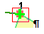
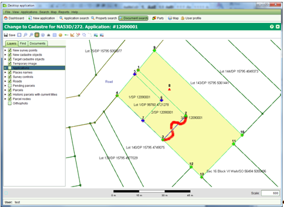

تسمح شاشة تغيير المساحة بفرز او دمج القطع. يمكن استخدام هذه الشاشة لتسجيل معلومات قطعة جديدة من خطة مساحة او تسجيل .... يمكن الوصول لهذه الشاشة من باستخدام خدمة تغيير مساحة من شاشة تفاصيل الطلب
تحتوي الشاشة على ادوات اضافية للمساعدة في التحرير المكاني للقطع. الادوات الاضافية هي :
الوظائف الحالية في تغيير المساحة مقتصرة فقط على القطع البسيطة التي تم تحديدها بخطوط مستقيمة وتستثني الحدود الطبيعية.
Bقبل ادخال بيانات الخطة , يجب تحديد القطع المطلوبة للتغيير سواء بالفرز او الدمج. اذا لم يكن مستعرض الخرائط مسلطا على الموقع المطلوب , استخدم البحث او التنقل على الخارطة لتحديد الموقع ثم اختر القطعة . القطع المطلوبة سوف يتم عرضها بلون ازرق داكن للحد ولون اصفر للداخل

تمثل نقاط المسح احداثيات مسجلة في خطة المسح.
بالامكان تحديد هذه النقاط باستخدام اداة انشاء\ربط نقاط المسح او من خلال ادخالها يدويا من ملف احداثيات المسح .
 ,
,
تلقائيا سوف يتم تعريف نقاط الحد . يمكن تغيير نقاط المسح الى نقاط اجتياز من خلال اختيار "ليست نقطة حد" في الادوات . سوف يتم عرض نقاط الاجتياز باللون الاحمر
يمكن ربط نقطة الحد بنقطة في القطعة الجديدة من خلال استخدام اداة انشاء\ربط نقاط المسح. ببساطة اختر نقطة الحد الجديدة واسحبها بالقرب من نقطة القطعة المطلوبة . سوف تقوم نقطة الحد بالتوسع الى النقطة الجديدة وسوف يتحول الاشارة باللون الازرق الى اللون الاخضر لتاكيد عملية الربط. لالغاء عملية الربط قم بالتراجع عن اختيار حقل "مربوطة"
اذا اردت التراجع عن نقطة مسح تم اضافتها بالخطأ , اختر النقطة ثم اضغط على زر "ازالة"
يمكن تحميل نقاط المسح من خلال تحميل ملف نصي بصيغة (CSV) يحتوي هذه النقاط . يجب اولا تحميل الملف على ملفات الطلب ثم استخدام اداة زر اضافة النقاط في صفحة الوثائق لتحميل البيانات. لمزيد من المعلومات ارجع الى شاشة تحميل نقاط المسح من ملف
لتسهيل عملية تحديد نقاط المسح بالامكان تحميل صورة من خطة المسح على مستعرض الخرائط ثم استخدام الفارة لتحديد نقاط المسح الجديدة.
لتحميل صورة من الخطة يجب اولا توفر هذه الصورة باحدى الصيغ التالية ( TIFF, PNG , JPEG) . اذا كنت تملك الصورة بصيغ اخرى عليك اولا تحويلها قبل عملية التحميل
الطريقة التي تعمل بها أداة اضافة صورة  Add Image tool works by matching
هي من خلال اختيار نقطتين متقابلتين على الخارطة لوضع الصورة بينهما . افضل طريقة هي باختيار نقطة من اسفل الصورة من الجهة اليسرى ثم اختيار نقطة مقابلة على الجهة الايمن من الاعلى او بالعكس . سوف يتم عرض الصورة بين النقطتين
Add Image tool works by matching
هي من خلال اختيار نقطتين متقابلتين على الخارطة لوضع الصورة بينهما . افضل طريقة هي باختيار نقطة من اسفل الصورة من الجهة اليسرى ثم اختيار نقطة مقابلة على الجهة الايمن من الاعلى او بالعكس . سوف يتم عرض الصورة بين النقطتين
لاحظ بان مستعرض الخرائط لا يوفر امكانية لتدوير الصورة . لذا اذا لم تحتوي الصورة على اتجهات صحيحة لا تحاول التعيين الرقممي من خلال الصورة لان النتائج سوف لن تكون دقيقة
بالامكان انشاء قطع جديدة من خلال استخدام اداة "انشاء قطعة جديدة" كل نقاط المسح للقطعة الجديدة يجب تعينها بترتيب معين وذلك اما مع او عكس عقارب الساعة والنقطة الاخيرة يجب ان تشكل حدا مغلقا للقطعة الجديدة . سوف يتم عرض القطعة الجديدة بحد بلون اخضر ولون اصفر للداخل .
اذا ارتكبت خطأ اثناء انشاء القطهى الجديدة يمكنك التراجع بالصغط على ايقونة "الغاء" والبدء من جديد
لفتح قائمة القطع او لتعديل تعريف القطعة الجديدة  استخدم اداة قائمة القطع وعدل الجزء الاول من التسمية. الجزء الاخير سوف يعين تلقائيا من رقم الطلب ولا يمكن تعديله . كما يمكنك استخدام الاداة لارالة قطعة تم انشاؤها عن طريق الخطأ
استخدم اداة قائمة القطع وعدل الجزء الاول من التسمية. الجزء الاخير سوف يعين تلقائيا من رقم الطلب ولا يمكن تعديله . كما يمكنك استخدام الاداة لارالة قطعة تم انشاؤها عن طريق الخطأ

تقوم اداة انشاء قطعة جديدة بانشاء الحد للفطعة الجديدة باستخدام خطوط مستقيمة بين نقاط المسح. اذا كنت تحتاج الى تعريف الحد باستخدام حدود غير منتظمة للتعبير عن الحدود الطبيعية مثلا , قم باستخدام اداة تغيير الحد لتعديل الخطوط المستقيمة للقطعة الجديدة
مهم: قبل استخدام اداة تغيير الحد تاكد من انك قمت باضافة جميع القطع التي سوف تتشارك بالحد الطبيعي. القيام بتغيير الحد فقط من جهة قطعة واحدة قد يخلق فراغات او تداخلات بين القطع . للقيام بذلك قد يتطلب ذلك اضافة قطعة غير موجودة في نقاط المسح. كما يتطلب ذلك اعادة انشاء قطع جديدة فوق القطع المستهدفة باستخدام اداة انشاء قطع جديدة
الاستثناء الوحيد لعدم الحاجة للقيام بالخطوات السابقة هو عندما يكون الحد الجديد الغير منتظم المطلوب على حد شاطئ بحيرة او بحر
لاختيار خطوط الحد  can be used
التي ترغب بتغييرها الى حدود غير منتظمة استخدم الاداة لاختيار نقاط البدء والنهاية من الحد المنتظم وذلك بسحب مربع صغير حول النقاط المطلاداة اختيار الحدوبة .
can be used
التي ترغب بتغييرها الى حدود غير منتظمة استخدم الاداة لاختيار نقاط البدء والنهاية من الحد المنتظم وذلك بسحب مربع صغير حول النقاط المطلاداة اختيار الحدوبة .

الترتيب الذي اخترته لتحديد نقاط البداية والنهاية مهم .سوف تقوم الاداة بتعليم النقاط مع عقارب الساعة من نقطة البداية الى نقطة النهاية. الخطوط المعلومة هي الخطوط التي سيتم استبدالها بالخطوط الغير منتظمة .اذا كان هناك خطأ في الترتيب اعد الاختيار بتبديل نقاط البدابة بنقاط النهاية او بالعكس
اختيار الحد المطلوب للتغيير سوف يفعل اداة تغيير الحد
 استخدم هذه الاداة لاعادة رسم الحد الجديد للقطعة باستخدام الفارة
استخدم هذه الاداة لاعادة رسم الحد الجديد للقطعة باستخدام الفارة

اذا كان الحد المطلوب تغيره يغطي مساخات واسعة فمن الممكن ان تكون العملية صعبة باستخدام هذه الاداة
 في هذه الحالة قم بانشاء حد جديد قريب من الحد المطلوب ثم استخدم اداة تغيير الحد لتعديله وذلك من خلال تكبير الحد المطلوب وتحسين موقع نقاط الحد
في هذه الحالة قم بانشاء حد جديد قريب من الحد المطلوب ثم استخدم اداة تغيير الحد لتعديله وذلك من خلال تكبير الحد المطلوب وتحسين موقع نقاط الحد
التغييرات التي تم القيام بها سوف تبقى معلقة حتى الانتهاء من الموافقة على الطلب باكمال جميع الخدمات  in the Application action dropdown.
القطع الجديدة حينها سوف تظهر في مستعرض الخرائط بانها القطع الحالية
in the Application action dropdown.
القطع الجديدة حينها سوف تظهر في مستعرض الخرائط بانها القطع الحالية
انظر ايضا